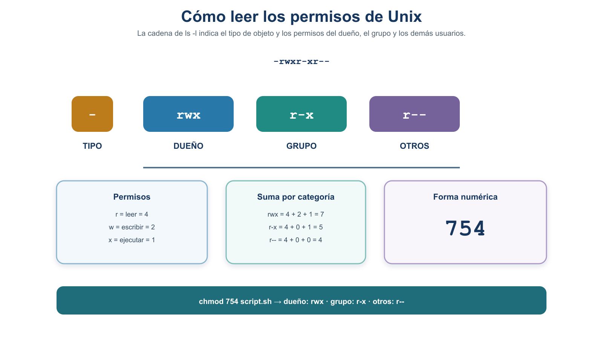
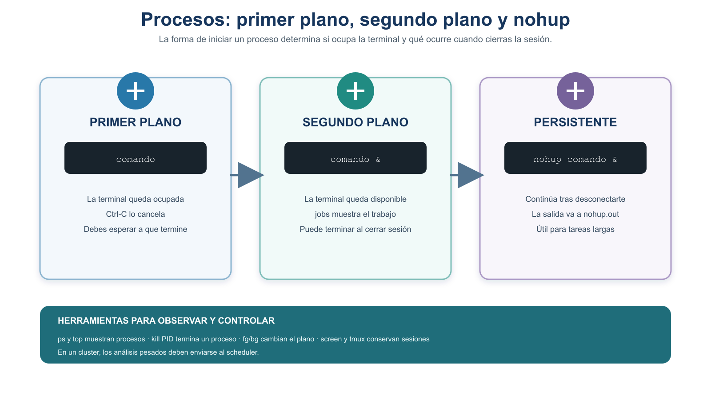

S5 — Gestionar: archivos, compresión, permisos y procesos
Este documento se estudia antes de la sesión S5. Antes del taller leerás los conceptos esenciales, harás predicciones y realizarás un primer intento seguro dentro de ~/proyecto/. Durante la sesión compararás resultados, diagnosticarás errores, corregirás tus decisiones y practicarás con archivos y procesos controlados. Después de la sesión entregarás una evidencia corregida en doc/protocolo.md y registrarás, cuando corresponda, la revisión crítica con IA en doc/bitacora-ia.md.
Tercer módulo de la Unidad 2. En S3 transferiste al servidor pacientes.md, pacientes-metadatos.md y protocolo.md. En S4 construiste por primera vez la estructura real ~/proyecto/, colocaste los datos y metadatos en data/source/, organizaste la documentación en doc/, verificaste pacientes.md mediante un checksum y completaste README.md con nano.
En S5 no reiniciaremos el proyecto ni transferiremos datos nuevos. Aprenderás a inspeccionar sus archivos sin modificar los originales, comprimir y restaurar una copia, conceder a un script solo el permiso que necesita y controlar un proceso ligero creado por ti. Estas habilidades preparan el paso de los procesos interactivos al procesamiento reproducible de datos. Más adelante, después de trabajar con tuberías y scripts, también servirán para comprender el sistema de colas del cluster.
Todas las prácticas de S5 se realizan en el home, dentro de ~/proyecto/, con archivos pequeños. No uses /export/space3/users/$USER: ese espacio se reservará para descargas de genomas, BLAST, análisis pesados y resultados voluminosos cuando corresponda.
Ficha del módulo
| Elemento | Descripción |
|---|---|
| Sesión | S5 (2 h) |
| Tema | Tipos de archivo, visualización, compresión, permisos y procesos |
| Competencia | B — Dominio del entorno Unix y del cómputo científico |
| Resultado del plan | Gestiona tipos de archivo, compresión, permisos y procesos |
| Consulta previa del plan | L3, diapositivas 61–final; lectura sobre procesos |
| Lectura base | Buffalo (2015), cap. 3; Shotts (2019), capítulos sobre permisos, procesos y control de trabajos |
| Caso conductor | Inspeccionar archivos del proyecto sin alterar los originales, ejecutar un script con el permiso mínimo y controlar un proceso propio |
| Evidencia | Registro en doc/protocolo.md con predicciones, resultados, verificaciones y explicación de decisiones |
Relación con la Unidad 1 y con S3–S4
La reproducibilidad no consiste solo en conservar comandos: también requiere proteger los datos originales, registrar los cambios de permisos, comprobar los resultados y poder explicar qué proceso se ejecutó y cómo terminó. En esta sesión retomarás cuatro productos previos:
data/source/pacientes.mdydata/source/pacientes-metadatos.md: se inspeccionan, pero no se editan, comprimen ni cambian sus permisos;README.md: se inspecciona y se copia al área de práctica antes de comprimir;src/: recibe el script pequeño de S5;doc/protocolo.mdydoc/bitacora-ia.md: reciben la evidencia y la reflexión posterior.
La política continúa siendo la misma: los originales de data/source/ son inmutables. Las operaciones que cambian contenido, nombre o permisos se realizan únicamente sobre copias o archivos creados expresamente para practicar.
Resultados de aprendizaje
Al terminar S5, el estudiante es capaz de:
- Distinguir el tipo de objeto mostrado por
ls -ldel tipo de contenido estimado porfile, y seleccionarhead,tailolesspara inspeccionar un archivo sin modificarlo. - Comprimir y restaurar una copia con
gzip/gunzip, predecir los cambios de nombre y verificar mediante SHA-256 que el contenido restaurado coincide con el inicial. - Interpretar permisos de archivos y directorios en
ls -ly conceder o retirar únicamente el permiso necesario mediantechmodsimbólico. - Distinguir proceso, PID y trabajo del shell; observar un proceso propio con
psyjobs -l; y controlarlo conCtrl-C,Ctrl-Z,bg,fgy una señal de terminación ordenada. - Documentar predicciones, comandos, observaciones, explicaciones y verificaciones, preservando los datos originales y sin exponer información sensible.
Ruta de aprendizaje
| Momento | Qué haces | Producto |
|---|---|---|
| Antes de clase | Lees las secciones 1–6, respondes las pausas de predicción y realizas el primer intento | Tabla inicial con predicciones, salidas y al menos una duda |
| Durante el taller | Comparas intentos, comprimes una copia, practicas permisos y controlas un sleep propio |
Registro corregido y resultados verificados |
| Después del taller | Actualizas doc/protocolo.md, confirmas que los originales siguen intactos y revisas críticamente una propuesta de IA |
Evidencia S5 + entrada en doc/bitacora-ia.md |
Para administrar la carga previa, distingue lo esencial de la consulta:
| Estudia y practica antes del taller | Consulta si necesitas ampliar |
|---|---|
file, head, tail, less, gzip, gunzip, ls -l, chmod simbólico, proceso, PID, ps, jobs, fg, bg, Ctrl-C, Ctrl-Z y SIGTERM |
tar, notación numérica, top, estado Z, nohup, screen y tmux |
Tiempo previo estimado: lectura esencial 40–50 min · microprácticas y predicciones 30–40 min · consulta opcional 15–20 min. La práctica presencial dura 120 min y la corrección posterior, 30–45 min.
En algunos puntos se muestra una salida de ejemplo para que reconozcas la forma del resultado y puedas detectar diferencias importantes. No tiene que coincidir carácter por carácter con la tuya: pueden variar usuario, grupo, PID, tamaño, fecha, idioma, permisos iniciales y descripción de file. Tu evidencia debe contener la salida que obtuviste realmente, no una copia del ejemplo.
mkdir, cp, gzip, gunzip, chmod y kill suelen permanecer en silencio cuando terminan correctamente. La ausencia de un error es una primera señal, pero no demuestra por sí sola que obtuviste el resultado deseado. Por eso las prácticas añaden una comprobación posterior con ls, file, sha256sum, jobs o ps, según la operación.
Antes de la sesión — preflight
Comprueba lo siguiente antes de practicar:
echo "$SHELL" suele indicar el shell configurado para la cuenta; ps -p "$$" -o comm= ayuda a identificar el proceso que ejecuta la sesión actual. El script declara Bash mediante #!/bin/bash, y las instrucciones de control de trabajos y los comandos help están redactados para Bash. Si observas otro shell, no cambies tu configuración: informa a la docente y usa las indicaciones correspondientes al entorno común del curso.
No cambies permisos, no edites y no comprimas directamente ningún archivo de data/source/. No ejecutes chmod sobre ~/proyecto/ completo. No uses chmod 777. No envíes señales a procesos que no hayas iniciado tú para esta práctica.
Archivos que generará la sesión
No necesitas descargar ni inventar datos nuevos. A partir de los productos de S4 generarás:
| Archivo o directorio | Cómo se genera | Función en S5 |
|---|---|---|
results/s5-pruebas/ |
mkdir -p |
Zona aislada para operaciones que cambian archivos |
results/s5-pruebas/README-copia.md |
cp -i desde README.md |
Copia que se comprime y restaura |
results/s5-pruebas/README-copia.md.gz |
gzip sobre la copia |
Archivo comprimido temporal |
src/practica-s5/prueba.sh |
Se escribe con nano en la sección 3.3 |
Script para practicar permisos y ejecución |
results/s5-pruebas/directorio-permisos/archivo.txt |
mkdir -p y touch |
Objetos desechables para comparar permisos |
doc/protocolo.md y doc/bitacora-ia.md no se crean de nuevo: ya existen como productos de sesiones anteriores y se actualizan después del taller. Ningún paso genera o modifica archivos en data/source/.
Del archivo al proceso: el recorrido de S5
En S4 organizaste los componentes de ~/proyecto/: datos, documentación, scripts y resultados. Sin embargo, organizar los archivos no basta para trabajar con ellos de manera segura. Antes de ejecutar un análisis necesitamos responder una secuencia de preguntas:
- ¿Qué objeto y qué tipo de contenido tenemos?
- ¿Cómo podemos inspeccionarlo sin modificarlo?
- ¿Conviene conservarlo comprimido o reunirlo con otros archivos?
- ¿Quién puede leerlo, modificarlo o ejecutarlo?
- ¿Qué ocurre cuando un script comienza a ejecutarse y se convierte en un proceso?
- ¿Cómo comprobamos que ese proceso es nuestro, qué está haciendo y cómo podemos detenerlo de forma segura?
Estas preguntas forman un solo recorrido:
reconocer → inspeccionar → almacenar → autorizar → ejecutar → observar y controlarSeguiremos ese recorrido con elementos pequeños de ~/proyecto/. Primero reconoceremos e inspeccionaremos archivos existentes sin alterar data/source/. Después comprimiremos y restauraremos una copia. A continuación prepararemos un script, le concederemos únicamente el permiso necesario y lo ejecutaremos. Finalmente observaremos y controlaremos un proceso ligero iniciado por nosotros.
El objetivo no es memorizar comandos aislados. Es aprender a conservar el control sobre un análisis desde que identificamos sus archivos hasta que termina su ejecución.
1. Dos significados de “tipo de archivo”
En esta sesión aparecerán dos preguntas diferentes:
- ¿Qué tipo de objeto representa esta entrada dentro del sistema de archivos?
ls -llo indica con el primer carácter:-para un archivo regular,dpara un directorio ylpara un enlace simbólico, entre otros tipos menos frecuentes. - ¿Qué clase de contenido parece contener?
fileexamina características y firmas del contenido y produce una descripción como “texto”, “datos comprimidos con gzip” o “imagen PNG”. No depende únicamente de la extensión, pero su resultado es una identificación basada en reglas y puede variar entre sistemas.
[REMOTO] Ejemplos sobre archivos que ya existen:
hostname
whoami
cd ~/proyecto
pwd
ls -ld README.md data data/source/pacientes.md
file README.md data/source/pacientes.mdVer una salida orientativa de ls y file
Una salida podría parecerse a esta:
-rw-r--r-- 1 alumna grupo 310 ago 20 10:15 README.md
drwxr-xr-x 4 alumna grupo 128 ago 20 10:10 data
-rw-r--r-- 1 alumna grupo 156 ago 19 18:42 data/source/pacientes.md
README.md: Unicode text, UTF-8 text
data/source/pacientes.md: CSV textLos nombres y tipos de objeto deberían ser coherentes con la estructura del proyecto, pero usuario, grupo, tamaños, fechas, permisos y descripción de contenido pueden ser distintos. Una descripción como ASCII text, Unicode text o simplemente text no constituye por sí sola un error.
ls -ld permite inspeccionar el objeto indicado sin listar el contenido de un directorio. En la salida de ls -l, el primer carácter no forma parte de los nueve permisos: primero aparece el tipo de objeto y después tres bloques de permisos para dueño, grupo y otros.
Pausa de predicción 1
Antes de abrir la respuesta, predice:
- ¿Qué primer carácter esperas para
README.mdy cuál paradata/? - Si una copia de
README.mdse llamaREADME.sin-extension, ¿dejaráfilede reconocerla como texto? - ¿
filemodifica el archivo que inspecciona?
Ver retroalimentación
- Se espera
-para el archivo regularREADME.mdydpara el directoriodata/. - Normalmente
fileseguirá describiendo la copia como texto porque examina su contenido y no solo el nombre. La redacción exacta depende de la implementación y de los caracteres presentes. - No.
fileinspecciona el archivo; no modifica su contenido. Podemos comprobarlo comparando su checksum antes y después si necesitamos evidencia adicional.
2. Inspeccionar contenido sin editar
Inspeccionar significa observar sin cambiar. Estas herramientas responden preguntas distintas:
| Herramienta | Pregunta que responde | Salida |
|---|---|---|
head archivo |
¿Cómo comienza? | Primeras 10 líneas |
head -n 3 archivo |
¿Cuáles son las primeras 3 líneas? | Cantidad indicada |
tail archivo |
¿Cómo termina? | Últimas 10 líneas |
less archivo |
¿Cómo navego por el contenido sin cargarlo todo en pantalla? | Visor paginado; salir con q |
cat archivo |
¿Quiero mostrar completo un archivo pequeño? | Todo el contenido de una vez |
[REMOTO] Inspección segura:
cd ~/proyecto
head -n 3 README.md
head -n 3 data/source/pacientes.md
tail data/source/pacientes-metadatos.md
less data/source/pacientes.mdhead, tail, less y cat no editan el archivo. Aun así, evita cat con archivos grandes porque puede llenar la pantalla. Más adelante trabajarás con genomas y elegir el visor adecuado será importante.
zcat archivo.gz muestra todo el contenido descomprimido en la terminal y puede inundar la pantalla, igual que cat. Si zless está disponible, permite navegar por un .gz sin restaurarlo. En S5 usaremos un archivo pequeño y verificaremos la herramienta disponible antes de depender de ella.
Pausa de predicción 2
Quieres comprobar si la última parte de un archivo de metadatos contiene un diccionario de variables sin abrir un editor. ¿Qué herramienta elegirías y por qué?
Ver retroalimentación
tail es un primer acercamiento razonable porque muestra las líneas finales. Si el archivo es más largo o necesitamos navegar, less permite recorrerlo y buscar visualmente sin modificarlo. La elección depende de la pregunta, no de memorizar un único comando “correcto”.
3. Comprimir no es lo mismo que empaquetar
Una vez identificado e inspeccionado un archivo, la siguiente decisión es cómo conviene almacenarlo o transferirlo. Para tomarla necesitamos distinguir entre reducir el tamaño de un archivo y reunir varios elementos en un solo paquete.
La compresión reduce la cantidad de bytes cuando el contenido es compresible. Esto puede ahorrar espacio y reducir lo que se transfiere por la red, aunque no todos los formatos se comprimen igual y algunos ya están comprimidos.
¿Cuándo se usa en bioinformática?
Los archivos de secuencias y anotaciones pueden contener millones de líneas de texto. Por eso es habitual encontrar archivos como muestra.fastq.gz, genoma.fasta.gz o anotacion.gff.gz. En esos casos, gzip comprime cada archivo por separado y conserva una convención que muchas herramientas bioinformáticas pueden leer directamente. Sin embargo, no todas las herramientas aceptan .gz: hay que comprobar su documentación antes de diseñar el flujo.
tar resuelve otra necesidad. Se utiliza cuando queremos reunir varios archivos y conservar su organización, por ejemplo para transferir o archivar juntos un conjunto de scripts, archivos de configuración, metadatos y resultados. tar crea un paquete; la opción z añade compresión gzip y produce habitualmente un .tar.gz.
| Situación bioinformática | Elección habitual | Razón |
|---|---|---|
| Guardar o transferir un FASTA, FASTQ, GFF o archivo tabular de texto | gzip → .gz |
Reduce el tamaño sin mezclarlo con otros archivos |
Analizar un FASTQ.gz con una herramienta que acepta gzip |
Conservar .gz |
Evita una copia descomprimida grande e innecesaria |
| Entregar juntos scripts, metadatos y varios resultados | tar o tar.gz |
Mantiene el conjunto y su estructura en un solo paquete |
Inspeccionar un archivo .gz pequeño o navegar por él |
zcat o zless, según disponibilidad |
Permite observar sin crear una copia restaurada |
| Archivo ya comprimido, como BAM/CRAM, ZIP o una imagen PNG | No aplicar gzip automáticamente |
Puede ahorrar muy poco y dificultar el uso por otras herramientas |
Comprimir no demuestra que el archivo sea correcto, no sustituye un checksum y no constituye por sí solo un respaldo. Además, descomprimir no es siempre un paso necesario: si un dato biológico llega como .gz y la herramienta de análisis lo admite, puede conservarse en ese formato. La decisión debe responder al flujo de trabajo, no a la idea de que “descomprimido es mejor”.
CONEXIÓN CON EL PROYECTO: En S5 no descargaremos archivos biológicos grandes. Usaremos una copia pequeña de
README.mdpara aprender el comportamiento degzipsin poner en riesgo los originales. Cuando trabajes posteriormente con FASTA, FASTQ o GFF, aplicarás la misma decisión después de revisar el formato de entrada aceptado por la herramienta correspondiente.
3.1 gzip y gunzip: un archivo
Por defecto, gzip archivo crea archivo.gz y sustituye el archivo sin comprimir. gunzip realiza la operación inversa. Por eso nunca los aplicaremos directamente a un original de data/source/ (GNU Project, Gzip Manual).
README-copia.md --gzip--> README-copia.md.gz --gunzip--> README-copia.mdzcat o zless permiten inspeccionar el contenido comprimido sin crear una copia restaurada, pero no sustituyen la verificación de integridad.
3.2 Consulta — tar: varios archivos o un directorio
tar reúne varios elementos en un archivo contenedor. Con la opción z también usa gzip (GNU Project, GNU Tar Manual):
carpeta/, paquete.tar.gz y directorio-vacio/ son nombres ilustrativos y no corresponden a artefactos de la práctica. Este bloque muestra la forma general del comando; la actividad evaluada utiliza gzip/gunzip.
tar -czf paquete.tar.gz carpeta/
tar -tzf paquete.tar.gz
tar -xzf paquete.tar.gz -C directorio-vacio/Ver una salida orientativa de tar
Una salida ficticia de tar -tzf paquete.tar.gz podría ser:
carpeta/
carpeta/script.sh
carpeta/metadatos.md
carpeta/resultados/
carpeta/resultados/resumen.txtEsta salida es la lista de elementos contenidos en el paquete. El comando con t no los extrae ni crea esas rutas en el directorio actual; permite revisar qué se restauraría antes de usar x.
c: crear el paquete;t: listar su contenido sin extraer;x: extraer;z: comprimir o descomprimir con gzip;f: el siguiente argumento es el nombre del archivo;-C: extraer dentro del directorio indicado.
La práctica evaluada utiliza gzip/gunzip. tar queda como consulta o como demostración guiada si el tiempo lo permite. Antes de extraer un paquete, conviene listar su contenido y utilizar un directorio vacío para evitar colisiones con archivos existentes.
Pausa de predicción 3
Predice qué nombres existirán después de cada operación sobre una copia llamada README-copia.md:
- antes de
gzip README-copia.md; - inmediatamente después de
gzip; - después de
gunzip README-copia.md.gz. - Recibes
muestra.fastq.gzy el programa de análisis acepta ese formato: ¿necesitas restaurarlo antes de analizar? - Quieres entregar juntos tres scripts, sus metadatos y dos resultados: ¿conviene
gzippor separado o crear un paquete contar?
Ver retroalimentación
- Existe
README-copia.md. - Existe
README-copia.md.gzy, con el comportamiento normal degzip, ya no existe la copia sin comprimir. - Vuelve a existir
README-copia.mdy desaparece.gz. El contenido restaurado debe comprobarse comparando su SHA-256 con el calculado antes de comprimir. - No necesariamente. Si la herramienta acepta
FASTQ.gz, conservarlo comprimido puede evitar una copia grande y ahorrar espacio. Hay que verificar la documentación de esa herramienta. tarpermite reunir los archivos y conservar la organización; con la opciónzpuede crear un.tar.gz. Comprimir cada archivo por separado no produce un único paquete ni conserva por sí solo la relación entre ellos.
3.3 Micropráctica previa — genera prueba.sh
Hasta ahora trabajamos con archivos destinados a leerse o almacenarse. Para estudiar el siguiente paso —autorizar la ejecución— necesitamos un archivo creado con ese propósito. Generaremos ahora un script pequeño que utilizaremos durante el resto de S5.
Esta micropráctica forma parte del primer intento antes de clase. Debe quedar terminada antes del taller para que el tiempo presencial se dedique a interpretar y comprobar permisos.
[REMOTO] Crea su directorio y abre el archivo con nano:
mkdir -p ~/proyecto/src/practica-s5
cd ~/proyecto/src/practica-s5
pwd
nano prueba.shSi prueba.sh no existía, nano lo generará cuando lo guardes. Escribe exactamente este contenido:
#!/bin/bash
echo "Prueba de ejecución S5"Guarda el archivo y comprueba que se generó con el nombre, la ruta y el contenido esperados:
ls -l prueba.sh
head prueba.shLa salida de head debe mostrar las dos líneas que acabas de guardar. Si el archivo ya existía de un intento anterior, verifica primero su contenido y no crees otro con un nombre diferente.
nano no es un contenido nuevo: ya aprendiste a abrir, guardar, salir y verificar un archivo en S4. Aquí lo utilizas para generar el objeto sobre el que estudiarás permisos.
Por ahora no necesitas analizar ni modificar la sintaxis. La primera línea indica qué intérprete debe leer el archivo y la segunda imprime un mensaje. En las lecciones posteriores de automatización y scripting estudiarás con detalle el shebang, los comandos, las variables, los parámetros y la construcción de scripts reutilizables. En S5 la pregunta es más acotada: ¿qué permiso necesita este archivo para ejecutarse directamente?
No ejecutes todavía prueba.sh y no le añadas permiso x. Primero aprenderás a interpretar su estado inicial en ls -l; después predecirás y comprobarás qué ocurre antes y después de conceder el permiso mínimo.
4. Leer permisos con ls -l
Tener un archivo correctamente identificado, inspeccionado y almacenado no determina quién puede usarlo. La siguiente pregunta del recorrido es quién puede leerlo, modificarlo o ejecutarlo. Unix representa esas decisiones mediante permisos asociados a cada archivo y directorio (Shotts, 2019).
Unix utiliza tres permisos básicos para tres categorías de personas:
r(read): lectura;w(write): escritura;x(execute): ejecución o recorrido;u(user): dueño del objeto;g(group): grupo asociado;o(others): demás usuarios.
Una línea como esta contiene más información que los permisos:
-rwxr-xr-- 1 usuario grupo 1024 ago 20 10:00 prueba.sh
│└─u┘└g┘└o┘ │ │ │ │ └─ nombre
│ │ │ │ └─ fecha/hora
│ │ │ └─ tamaño
│ │ └─ grupo
│ └─ dueño
└─ tipo de objeto
Figura 1. Lectura de permisos en ls -l. La forma 754 ilustra cómo se decodifica una cadena; no es una recomendación general ni el permiso que necesita el script personal de esta sesión.
4.1 Los permisos no significan lo mismo en archivos y directorios
| Permiso | En un archivo regular | En un directorio |
|---|---|---|
r |
Leer el contenido | Listar los nombres de sus entradas |
w |
Modificar el contenido | Crear, eliminar o renombrar entradas, normalmente junto con x |
x |
Solicitar su ejecución como programa | Atravesarlo y acceder a entradas conocidas |
Poder eliminar un archivo depende principalmente de los permisos del directorio que lo contiene, no solo del permiso w del archivo. Tampoco basta siempre con añadir x para ejecutar un script: debe tener un intérprete válido, contenido legible para ese intérprete y estar en un sistema de archivos que permita ejecución.
4.2 Cambiar solo lo necesario con chmod
La notación simbólica expresa de forma legible quién cambia, qué operación se realiza y qué permiso se afecta:
chmod u+x prueba.sh # añade ejecución al dueño
chmod u-x prueba.sh # retira ejecución al dueño
chmod g-w prueba.sh # retira escritura al grupoConsulta — notación numérica
La notación numérica representa cada bloque con la suma r=4, w=2, x=1:
| Valor | Permisos |
|---|---|
| 7 | rwx |
| 6 | rw- |
| 5 | r-x |
| 4 | r-- |
| 0 | --- |
En 754, por ejemplo, el dueño recibe rwx, el grupo r-x y los demás r--. Esta forma sustituye los tres bloques completos; por eso puede conceder o retirar permisos que no pretendías cambiar. En S5 la forma numérica se interpreta como ejercicio de lectura, pero la práctica utiliza chmod u+x, que expresa el cambio mínimo necesario.
chmod 777
Concede lectura, escritura y ejecución a dueño, grupo y demás usuarios. No es una solución apropiada a Permission denied: oculta la causa y concede permisos excesivos. Primero inspecciona el objeto, el directorio, el intérprete y el permiso realmente necesario.
Pausa de predicción 4
Un script muestra -rw-r----- y solo su dueño necesita ejecutarlo.
- ¿Qué comando realiza el cambio mínimo?
- ¿Cómo debería verse el bloque del dueño después?
- ¿Por qué
chmod 777sería excesivo?
Ver retroalimentación
chmod u+x script.sh.- El bloque del dueño cambia de
rw-arwx; grupo y otros deben conservarse como estaban. 777también concedería escritura y ejecución al grupo y a los demás, aunque la tarea solo exige ejecución para el dueño. Además sustituiría todos los permisos en vez de añadir uno con propósito.
5. Proceso, PID y estado
Hasta este punto hemos tratado los scripts como archivos almacenados: podemos reconocerlos, leerlos y decidir si tienen permiso de ejecución. Cuando ejecutamos un script o cualquier otro programa, aparece una entidad nueva que existe mientras el trabajo se realiza: un proceso. Por eso el recorrido pasa ahora del archivo ejecutable a la actividad que produce al ejecutarse.
Un programa es un conjunto de instrucciones almacenado; un proceso es una instancia de ese programa en ejecución. El sistema asigna a cada proceso un PID (Process ID).
Los procesos pueden encontrarse en diferentes estados. Las letras exactas de ps dependen del sistema, pero en el servidor Linux verás con frecuencia:
| Estado | Significado básico |
|---|---|
R |
ejecutándose o listo para usar CPU |
S |
esperando de manera interrumpible; sleep suele aparecer así |
T |
detenido, por ejemplo después de Ctrl-Z |
Z (consulta) |
terminado, pero aún no recolectado por su proceso padre (zombie) |
“En segundo plano” no es un estado de CPU. Describe la relación del trabajo con la terminal. Un sleep puede estar en segundo plano y mostrar estado S porque está esperando.
5.1 Observar procesos propios con ps
[REMOTO] Herramientas esenciales:
ps -f -u "$USER" # procesos de tu usuario, con detalle
ps -o pid,stat,cmd -p 12345 # sustituye 12345 por un PID que hayas comprobadoVer una salida orientativa de ps
Una salida ficticia de ps -f -u "$USER" podría verse así:
UID PID PPID C STIME TTY TIME CMD
alumna 18421 18420 0 10:02 pts/3 00:00:00 -bash
alumna 18507 18421 0 10:15 pts/3 00:00:00 sleep 300
alumna 18512 18421 0 10:15 pts/3 00:00:00 ps -f -u alumnaEn este ejemplo:
UIDidentifica al usuario propietario;PIDidentifica cada proceso;PPIDes el PID del proceso padre;Ces un indicador entero del uso reciente de CPU; en unsleepsuele ser0;STIMEindica cuándo comenzó el proceso;TTYindica la terminal asociada;TIMEmuestra tiempo de CPU acumulado, no el tiempo transcurrido desde que inició;CMDmuestra el comando.
La línea de ps puede aparecer porque el propio comando estaba ejecutándose cuando tomó la fotografía. Usuario, PID, hora, terminal, cantidad de procesos y comandos serán distintos en tu sesión. El sleep 300 solo aparecerá si ya existe un proceso de ese tipo bajo tu cuenta.
ps produce una fotografía del momento. Si el proceso termina antes de ejecutar el segundo comando, ya no aparecerá.
5.2 Consulta — top
top actualiza la información continuamente y se cierra con q:
topLa pantalla completa cambia continuamente y contiene información del sistema.
Ver un extracto orientativo de top
Un extracto simplificado de la fila correspondiente a tu proceso podría parecerse a este:
PID USER S %CPU %MEM TIME+ COMMAND
18507 alumna S 0.0 0.0 0:00.00 sleepAquí reconocemos el PID, el usuario, el estado S, el consumo de CPU y memoria y el comando. Para sleep es esperable observar un consumo cercano a cero. No intentes comparar toda la pantalla de top línea por línea: los procesos y valores cambian incluso mientras la estás mirando.
Las opciones y teclas de top varían entre implementaciones. Si decides consultar esta herramienta, basta con reconocer que muestra procesos y salir con q. htop puede ser más amigable, pero no se presupone que esté instalado.
Pausa de predicción 5
Si ejecutas sleep 300, ¿esperas que consuma CPU continuamente? ¿Qué estado es razonable observar?
Ver retroalimentación
No. sleep espera durante el tiempo indicado y normalmente aparece con estado S. Es útil para practicar porque permanece activo sin realizar un análisis pesado. Si jobs dice Running, eso significa que el trabajo no está detenido por el shell; no implica que esté usando CPU continuamente.
6. Trabajos del shell, planos y señales
Reconocer un proceso y su PID es solo el primer paso. También necesitamos comprender cómo se relaciona con la terminal desde la que lo iniciamos: si ocupa el primer plano, si continúa en segundo plano, si está detenido o si recibió una señal. El control de trabajos conecta la observación del proceso con las decisiones que tomamos durante su ejecución.
Un trabajo (job) es la forma en que el shell agrupa y controla uno o más procesos iniciados desde esa terminal (GNU Project, Bash Reference Manual). El número de trabajo y el PID no son lo mismo:
| Identificador | Ejemplo | Alcance |
|---|---|---|
| Número de trabajo | %1 |
Solo el shell actual; lo usan fg y bg |
| PID | 12345 |
Identificador del proceso en el sistema; lo muestran ps y jobs -l |
jobs solo conoce los trabajos iniciados y controlados por esa misma sesión del shell. Si abres otra terminal, su tabla de trabajos será diferente, aunque ps pueda observar el proceso.
6.1 Primer plano y segundo plano
- Primer plano: el trabajo recibe la entrada de la terminal; el shell espera y no muestra un nuevo prompt mientras el proceso continúa.
- Segundo plano: el shell devuelve el prompt; el trabajo puede continuar sin controlar la entrada de la terminal.
sleep 300 & # inicia un trabajo en segundo plano
jobs -l # muestra número de trabajo, PID y estado del trabajo
fg %1 # trae el trabajo 1 al primer plano; usa el número real
bg %1 # reanuda en segundo plano un trabajo detenido; usa el número realEl número puede no ser %1 si tu shell ya tiene otros trabajos. Lee la salida real de jobs -l y no copies un número de ejemplo sin verificarlo.
6.2 Ctrl-C y Ctrl-Z no hacen lo mismo
Ctrl-Csolicita interrumpir el proceso en primer plano medianteSIGINT. Muchos programas terminan, aunque un programa puede gestionar la señal de otra manera.Ctrl-Zsolicita detener temporalmente el trabajo medianteSIGTSTP. No lo termina: después puede reanudarse conbgofg.
primer plano --Ctrl-Z--> detenido --bg--> segundo plano
^ |
└---------------- fg ------------------┘
Figura 2. Las tres formas de iniciar un proceso y su relación con la terminal. nohup, screen y tmux aparecen como referencia [Consulta]: se usarán cuando un análisis lo justifique, no en esta sesión.
6.3 kill envía señales
Pese a su nombre, kill es una herramienta para enviar una señal. La señal predeterminada suele ser SIGTERM, una solicitud de terminación ordenada (Kerrisk, kill(1)):
kill -TERM 12345 # sustituye 12345 por el PID de tu propio sleepAntes de enviar una señal:
- confirma el PID con
jobs -lyps; - confirma que el comando es el
sleepcreado por ti; - usa
SIGTERMprimero; - verifica después que el proceso terminó.
No pruebes con PIDs ajenos ni con procesos del sistema. No uses kill -9 o SIGKILL como primera opción: fuerza la terminación sin permitir limpieza. En S5 no es necesario practicarla.
6.4 Consulta — ¿qué continúa si se cierra la conexión?
Un trabajo en segundo plano y un trabajo preparado para tolerar el cierre de sesión no son sinónimos. Al terminar una conexión, el shell o el sistema pueden enviar SIGHUP a sus trabajos.
nohup comando &nohup inicia el comando ignorando SIGHUP; & lo coloca en segundo plano (Shotts, 2019). Si la salida sigue conectada a la terminal, normalmente se guarda en nohup.out. Esto no protege frente a otros errores, reinicios, límites del sistema o señales distintas.
nohup, screen y tmux no autorizan ejecutar análisis pesados en un nodo de acceso. Los trabajos prolongados o intensivos del cluster se envían al planificador institucional. Ese tema se estudiará más adelante, cuando ya hayas practicado procesamiento de datos y scripts. En S5 nohup, screen y tmux son conceptos de consulta; la práctica utiliza únicamente sleep y termina el proceso antes de cerrar la sesión.
Pausa de predicción 6
Indica qué herramienta corresponde a cada propósito:
- ver los trabajos del shell actual y sus PID;
- llevar un trabajo detenido al segundo plano;
- traer un trabajo al primer plano;
- detener temporalmente el trabajo en primer plano;
- solicitar la terminación ordenada de un proceso propio.
Ver retroalimentación
jobs -l.bgseguido del número de trabajo correspondiente, por ejemplobg %1.fgseguido del número de trabajo, por ejemplofg %1.Ctrl-Z; después debe comprobarse que el trabajo aparece como detenido.kill -TERM PID, después de verificar que el PID y el comando corresponden al proceso propio.
7. Práctica S5 — inspeccionar, proteger y controlar
Regla de trabajo: en cada actividad sigue el ciclo predecir → ejecutar → observar → explicar → verificar. No copies una salida esperada como si fuera tu resultado: registra lo que ocurrió realmente en tu cuenta y explica cualquier diferencia.
Antes de clase — primer intento formativo
[REMOTO] 1. Confirma el entorno y los productos previos:
hostname
whoami
cd ~/proyecto
pwd
ls -ld README.md data/source src results doc
ls -l data/source/pacientes.md data/source/pacientes-metadatos.md
ls -l doc/protocolo.md doc/bitacora-ia.mdSi falta alguno de los productos de S4, detente y revisa su ubicación antes de crear los archivos de S5. No generes un protocolo o una bitácora nuevos con el mismo nombre, porque podrías fragmentar la documentación acumulativa del curso.
[REMOTO] 2. Inspecciona sin modificar:
file README.md data/source/pacientes.md data/source/pacientes-metadatos.md
head -n 3 README.md
head -n 3 data/source/pacientes.md
tail data/source/pacientes-metadatos.md
less data/source/pacientes.md # presiona q para salir[REMOTO] 3. Crea el espacio aislado y una copia:
mkdir -p ~/proyecto/results/s5-pruebas
ls -l ~/proyecto/results/s5-pruebas
cp -i ~/proyecto/README.md ~/proyecto/results/s5-pruebas/README-copia.md
ls -l ~/proyecto/README.md ~/proyecto/results/s5-pruebas/README-copia.mdAntes de ejecutar cp, revisa la salida del directorio. La tabla siguiente evita sobrescribir o mezclar intentos anteriores:
| Estado observado | Acción segura |
|---|---|
No existe README-copia.md ni README-copia.md.gz |
Ejecuta cp -i como se indica. |
Ya existe README-copia.md |
No la sobrescribas. Conserva el archivo y lleva el caso al taller para comprobar su origen e integridad. |
Solo existe README-copia.md.gz |
No ejecutes gunzip todavía; registra el estado y diagnostícalo durante el taller. |
| Existen ambos nombres | No comprimas, restaures ni elimines nada; registra el estado y consulta antes de continuar. |
Si repites la práctica después de concluir S5, crea un subdirectorio nuevo, por ejemplo results/s5-pruebas/repeticion-01/, y adapta todas las rutas de la repetición de forma consistente. No borres evidencia previa solo para obtener el estado esperado.
[REMOTO] 4. Realiza un primer intento con un proceso ligero:
sleep 30 &
jobs -lEspera a que termine por sí solo y vuelve a ejecutar jobs -l; si el aviso no aparece de inmediato, presiona Enter una vez. Los 30 segundos permiten observar un trabajo sin dejarlo activo. En el taller se usarán 300 segundos para disponer de tiempo suficiente para detenerlo, reanudarlo y terminarlo de manera controlada.
Lleva al taller:
- tus predicciones sobre los tipos de archivo;
- las salidas reales de
file,ls -l,head prueba.shyjobs -l; src/practica-s5/prueba.shgenerado con el contenido proporcionado;- una explicación provisional de la diferencia entre número de trabajo y PID;
- al menos una duda o un resultado inesperado.
Ver retroalimentación
El primer intento se considera preparado si se comprobó el contexto, se inspeccionaron los archivos sin modificarlos, se creó una copia dentro de results/s5-pruebas/, se generó prueba.sh con el contenido proporcionado, se inició un sleep propio y se registraron las salidas y dudas. Los errores razonables no se penalizan; ocultarlos o copiar resultados ajenos impide utilizarlos para aprender durante el taller.
Durante el taller — comparación, diagnóstico y corrección
Actividad 1. Verificar que inspeccionar no alteró el original
Compara tu selección de herramientas y tus salidas con otra persona.
Recupera de S3/S4 el SHA-256 de
pacientes.md.Calcula de nuevo el checksum del original:
# [REMOTO] sha256sum ~/proyecto/data/source/pacientes.mdConfirma que coincide. Si no coincide, detente: no continúes con ese archivo ni intentes “arreglarlo”. Conserva la evidencia y consulta a la docente.
Ver resultado esperado de la Actividad 1
El SHA-256 debe coincidir exactamente con el registrado en S3/S4. file, head, tail y less no modifican el contenido. Una diferencia indica que el archivo cambió en otro momento o que se comparó una ruta distinta; debe diagnosticarse antes de seguir.
Actividad 2. Comprimir y restaurar una copia
Trabaja exclusivamente dentro de results/s5-pruebas/:
Confirma la ruta y calcula el checksum inicial de la copia:
# [REMOTO] cd ~/proyecto/results/s5-pruebas pwd ls -l README-copia.md sha256sum README-copia.mdPredice qué nombre existirá después de
gzipy registra tu respuesta.Comprime y verifica:
# [REMOTO] gzip README-copia.md ls -l README-copia.md.gz file README-copia.md.gzSalida orientativa:
-rw-r--r-- 1 alumna grupo 245 ago 20 10:35 README-copia.md.gz README-copia.md.gz: gzip compressed data, was "README-copia.md", ...Lo esencial es que aparezca el nombre terminado en
.gzy quefilereconozca el formato gzip; tamaño, fecha y texto adicional pueden variar.Si
zlessestá disponible, úsalo y sal conq. Si no está disponible, registra esa diferencia; no es un fallo de la práctica.Predice qué ocurrirá al restaurar y ejecuta:
# [REMOTO] gunzip README-copia.md.gz ls -l README-copia.md sha256sum README-copia.mdLa salida del checksum tiene 64 caracteres hexadecimales seguidos del nombre, por ejemplo:
6f1ed002ab5595859014ebf0951522d9f4982e747a39c933732347545d4f4260 README-copia.mdLa huella mostrada es ficticia y solo ilustra el formato. Compara las dos cadenas completas de tu propia salida; no compares tu resultado con la huella del ejemplo.
Compara el SHA-256 final con el inicial y confirma que el original
~/proyecto/README.mdsigue existiendo.
Ver resultado esperado de la Actividad 2
gzip sustituye la copia sin comprimir por README-copia.md.gz; file debe reconocer alguna forma de datos comprimidos con gzip. gunzip restaura el nombre README-copia.md. Los SHA-256 inicial y final deben coincidir. El archivo original ~/proyecto/README.md no debe cambiar ni desaparecer.
Actividad 3. Comprobar el script y conceder el permiso mínimo
Entra al directorio creado antes de clase y comprueba que el script existe y conserva el contenido proporcionado:
# [REMOTO] cd ~/proyecto/src/practica-s5 pwd ls -l prueba.sh head prueba.shSi falta el archivo o su contenido está incompleto, vuelve al paso 4 del primer intento y genéralo con
nano. No continúes con otro nombre ni inventes contenido diferente.Controla el estado inicial retirando el permiso de ejecución del dueño y vuelve a inspeccionarlo:
# [REMOTO] chmod u-x prueba.sh ls -l prueba.shSalida orientativa antes de intentar la ejecución:
-rw-r--r-- 1 alumna grupo 49 ago 20 10:48 prueba.shLo importante es que el bloque del dueño comience con
rw-; los permisos de grupo y otros pueden diferir según la configuración inicial.Predice qué ocurrirá y prueba la ejecución directa:
# [REMOTO] ./prueba.shEl mensaje puede parecerse a uno de estos, según el shell y el idioma:
bash: ./prueba.sh: Permission deniedRegistra el mensaje real. Después añade solo el permiso necesario y vuelve a probar:
# [REMOTO] chmod u+x prueba.sh ls -l prueba.sh ./prueba.shSalida orientativa después del cambio:
-rwxr--r-- 1 alumna grupo 49 ago 20 10:48 prueba.sh Prueba de ejecución S5Compara exclusivamente el cambio
rw-→rwxen el bloque del dueño y el mensaje producido por tu script; no esperes que todos los demás campos coincidan.Explica qué carácter cambió, para quién y por qué no se modificaron los permisos de grupo u otros.
Ver resultado esperado de la Actividad 3
Tras chmod u-x, el bloque del dueño no contiene x y la ejecución directa normalmente produce Permission denied o su equivalente. Tras chmod u+x, ls -l muestra x para el dueño y el script imprime Prueba de ejecución S5. Si aún falla, hay que revisar la ruta, el shebang, el contenido y las políticas del sistema de archivos; añadir permisos más amplios no es el siguiente paso automático.
Actividad 4. Comparar el permiso x en un archivo y un directorio
Usa solo un directorio desechable:
# [REMOTO]
cd ~/proyecto/results/s5-pruebas
mkdir -p directorio-permisos
touch directorio-permisos/archivo.txt
ls -ld directorio-permisos
chmod u-x directorio-permisos
ls -ld directorio-permisos
cd directorio-permisosEl error esperado puede verse así:
bash: cd: directorio-permisos: Permission deniedEl prefijo y el idioma pueden variar. Registra tu mensaje real. Desde el directorio padre, restaura inmediatamente el permiso y comprueba el acceso:
# [REMOTO]
cd ~/proyecto/results/s5-pruebas
chmod u+x directorio-permisos
ls -ld directorio-permisos
cd directorio-permisos
pwd
cd ..Ver resultado esperado de la Actividad 4
Sin x para el dueño, no debería ser posible atravesar el directorio mediante cd, aunque pueda seguir teniendo r. Al restaurar u+x, el acceso vuelve a ser posible. La prueba no autoriza retirar x de ~/proyecto/, data/ ni otros directorios reales.
Actividad 5. Controlar un proceso propio de principio a fin
Antes de empezar, comprueba que no exista un sleep anterior de la práctica en jobs -l. Después:
Practica primero una interrupción en primer plano:
# [REMOTO] sleep 30Antes de que termine, presiona
Ctrl-Cy ejecutajobs -l. Elsleepdebe terminar, por lo que no debe quedar como trabajo activo. Esta prueba distingue interrumpir conCtrl-Cde detener temporalmente conCtrl-Z, que practicarás más adelante.Inicia un proceso ligero en segundo plano:
# [REMOTO] sleep 300 & jobs -lSalida orientativa:
[1] 24680 [1]+ 24680 Running sleep 300 &Aquí
%1sería el trabajo y24680el PID. Ambos son ficticios: utiliza los que muestre tu shell.Registra el número de trabajo y el PID mostrados. Sustituye
12345por el PID real:# [REMOTO] ps -o pid,stat,cmd -p 12345Si
12345se hubiera sustituido por el PID correcto, la forma esperada sería semejante a:PID STAT CMD 24680 S sleep 300Ses razonable parasleep; no significa que el proceso haya terminado.Predice qué ocurrirá al llevarlo al primer plano. Sustituye
%1por el número real del trabajo:# [REMOTO] fg %1Presiona
Ctrl-Z. Comprueba conjobs -lypsque está detenido; es razonable observar estadoT.Salida orientativa después de
Ctrl-Zy de volver a consultar:^Z [1]+ Stopped sleep 300 PID STAT CMD 24680 T sleep 300El orden y el texto pueden variar, pero deben aportar evidencia de que el trabajo quedó detenido, no terminado.
Reanúdalo en segundo plano y verifica:
# [REMOTO] bg %1 jobs -l ps -o pid,stat,cmd -p 12345Salida orientativa de
jobs -ltrasbg:[1]+ 24680 Running sleep 300 &Confirma una última vez que PID y comando corresponden a tu
sleep. Solicita la terminación ordenada y verifica:# [REMOTO] kill -TERM 12345 jobs -l ps -o pid,stat,cmd -p 12345Después de
SIGTERM, el shell puede informarTerminatedinmediatamente o al mostrar el siguiente prompt. La verificación decisiva es quepsya no produzca una fila para ese PID:PID STAT CMDVer solo el encabezado —o ninguna salida, según la variante de
ps— indica que ese PID ya no está activo. No uses como criterio que el mensaje coincida literalmente con el ejemplo.Explica la diferencia entre
%1, el PID,Ctrl-C,Ctrl-Z,bgySIGTERM.
Ver resultado esperado de la Actividad 5
Ctrl-C interrumpe el primer sleep, que no debe permanecer en jobs. jobs -l relaciona el número de trabajo con el PID del segundo proceso. Antes de detenerlo, sleep suele aparecer en estado S; Ctrl-Z lo deja detenido y puede verse T. bg lo reanuda sin darle el primer plano. kill -TERM envía una solicitud de terminación al PID comprobado. Al final, ps -p PID ya no debe mostrar ese proceso y jobs puede mostrarlo temporalmente como terminado antes de retirarlo de la tabla.
Después del taller — entrega final
Actualiza ~/proyecto/doc/protocolo.md con una sección como esta, completada con tus resultados reales:
## Archivos, permisos y procesos (S5)
### Entorno y zona de práctica
- Servidor: [SERVIDOR]
- Directorio de trabajo: ~/proyecto/
- Zona aislada: results/s5-pruebas/
- Script: src/practica-s5/prueba.sh
### Inspección de archivos
| Archivo | Predicción | Resultado de file | Herramienta de inspección | ¿Se modificó? |
| --- | --- | --- | --- | --- |
| README.md | | | | |
| data/source/pacientes.md | | | | |
### Compresión y restauración
| Momento | Nombre presente | SHA-256 | Interpretación |
| --- | --- | --- | --- |
| Antes de gzip | | | |
| Después de gzip | | No aplica al archivo restaurado | |
| Después de gunzip | | | |
### Permisos del script
| Momento | Salida relevante de ls -l | Predicción/resultado | Explicación |
| --- | --- | --- | --- |
| Sin u+x | | | |
| Con u+x | | | |
### Control del proceso
| Momento | Trabajo | PID | Estado observado | Acción o señal | Verificación |
| --- | --- | --- | --- | --- | --- |
| Primer plano interrumpido | No aplica | | | Ctrl-C | |
| Segundo plano | | | | | |
| Detenido | | | | | |
| Reanudado | | | | | |
| Terminado | | | | | |
### Seguridad y reproducibilidad
- Evidencia de que data/source/pacientes.md no cambió:
- Permiso mínimo concedido y justificación:
- Cómo confirmé que el PID era mío:
- Problema encontrado y cómo lo diagnostiqué:
- Conclusión:Evidencia mínima calificable:
- SHA-256 coincidente antes y después de restaurar la copia;
- SHA-256 de
data/source/pacientes.mdcoincidente con S3/S4; - permisos antes y después de
chmod u+x; - registro de
Ctrl-Cy, para el segundosleep, número de trabajo, PID, estado, comando, señal y verificación de que terminó; - explicación del permiso mínimo y de por qué no se utilizó
chmod 777,kill -9ni el espacio institucional.
Registro completo recomendado:
- predicciones y salidas reales, no reconstruidas;
- tablas del protocolo completas;
- al menos un error o duda diagnosticados, o la declaración explícita de que no surgieron.
La actividad de IA de la sección 8 es formativa. Su registro en doc/bitacora-ia.md complementa la evidencia manual, pero no sustituye la evidencia mínima ni constituye una entrega calificable separada, salvo que la docente indique lo contrario.
8. Actividad formativa de IA — revisar una solución ya ejecutada
Regla: primero resuelves y verificas la práctica manualmente. La IA revisa tu razonamiento; no elige un PID, no opera el servidor y no sustituye la comprobación con documentación local,
ls,psy pruebas controladas.
HERRAMIENTA INDICADA: Para esta revisión utiliza ProfeUnix Bioinfo. Si tu cuenta no permite acceder al GPT, realiza la misma actividad con otro asistente autorizado y registra el nombre de la herramienta en
doc/bitacora-ia.md. El cambio de herramienta no modifica los criterios de privacidad, validación ni evidencia.
- Trabaja con una copia de tu registro.
- Sustituye servidor, usuario, rutas institucionales y PID por
[SERVIDOR],[USUARIO],[RUTA]y[PID]. No incluyas contraseñas, IP, llaves, huellas, tokens ni nombres de procesos ajenos. - Pide a la IA que revise la seguridad y el razonamiento de tus pasos.
- Busca especialmente recomendaciones como
chmod 777,sudo,kill -9inmediato, PIDs inventados, edición dedata/source/o uso innecesario de/export/space3. - Valida las observaciones con esta lección,
man chmod,man psy pruebas únicamente en el área aislada. Si trabajas en Bash, consulta ademáshelp jobs,help fg,help bgyhelp kill; si tu shell es otro, utiliza su documentación y confirma las diferencias con la docente. - Registra en
doc/bitacora-ia.mdel prompt, respuesta relevante, validación, correcciones y decisión.
Ver prompt sugerido
Estoy aprendiendo permisos y control de procesos en Unix. Ya realicé manualmente una práctica sobre un script de prueba y un proceso
sleepcreado por mí. Revisa la secuencia anonimizada que incluyo abajo. Identifica: (1) permisos excesivos, (2) riesgo de modificar datos originales, (3) confusión entre número de trabajo y PID, (4) señales demasiado agresivas y (5) verificaciones faltantes. No inventes PIDs, no propongassudo, no asumas quechmod 777es aceptable y no reescribas la solución completa. Devuelve una tabla con “hallazgo”, “riesgo”, “cómo verificarlo” y “corrección mínima”.
Compara la respuesta con tu solución manual. Tu intento manual es una línea base, no una verdad absoluta: ambos deben contrastarse con documentación y evidencia. Explica qué sugerencias aceptaste o rechazaste y por qué.
9. Errores frecuentes y diagnóstico
| Síntoma | Posibles causas | Diagnóstico seguro |
|---|---|---|
Permission denied al ejecutar |
Falta x, ruta incorrecta, intérprete o política del sistema |
pwd, ls -l, head del script; no usar 777 |
| No puedo entrar a un directorio | Falta x en el directorio o en algún padre |
ls -ld sobre el directorio de prueba; restaurar u+x |
file no dice lo esperado |
Contenido distinto, archivo vacío o reglas diferentes | Revisar nombre, tamaño y una muestra segura; no forzar una conclusión |
gzip “hizo desaparecer” el archivo |
Lo sustituyó por el nombre terminado en .gz |
pwd, ls -l, file; trabajar siempre sobre una copia |
| El checksum restaurado no coincide | Se restauró otra copia o el contenido cambió | Detenerse, revisar rutas y repetir desde una copia conocida |
jobs no muestra el proceso |
Se inició en otro shell, ya terminó o no es un trabajo de esa sesión | Usar el mismo shell; comprobar el PID con ps |
fg %1 falla |
%1 no es el número de trabajo actual |
Ejecutar jobs -l y usar el número real |
ps -p PID no muestra nada |
El proceso terminó o el PID no corresponde | Revisar la salida previa de jobs -l; no probar PIDs al azar |
kill -TERM no parece terminarlo |
PID incorrecto, proceso ya terminado o señal gestionada | Confirmar PID/comando/propietario y volver a observar; consultar antes de escalar |
| La terminal queda ocupada | El proceso está en primer plano | Ctrl-C para interrumpir o Ctrl-Z para detener, según el objetivo |
top se queda abierto |
Es una interfaz interactiva | Presionar q |
10. Los cuatro principios hechos observables en S5
- Reproducibilidad: el protocolo registra rutas, comandos, permisos, PID, señal y resultados.
- Verificación: se comparan checksums, permisos antes/después y presencia/ausencia del PID.
- Validación: la sintaxis y el comportamiento se contrastan con la documentación y una prueba controlada.
- Robustez: se confirma la misma conclusión mediante evidencias complementarias:
jobs -lypspara el proceso; checksum y presencia del archivo para la restauración.
11. Evidencia de aprendizaje
La evidencia principal es la sección S5 de doc/protocolo.md. Debe demostrar que el estudiante:
- inspeccionó archivos existentes sin alterar
data/source/; - comprimió y restauró una copia con integridad comprobada;
- interpretó y modificó el permiso mínimo de un script propio;
- distinguió número de trabajo y PID;
- observó al menos un estado del proceso;
- interrumpió un proceso en primer plano con
Ctrl-Cy comprobó que no quedó activo; - movió el trabajo entre primer plano, detenido y segundo plano;
- envió
SIGTERMúnicamente al proceso de prueba y verificó su terminación; - explicó decisiones y diagnosticó resultados inesperados.
La entrada en doc/bitacora-ia.md es evidencia complementaria del uso crítico y declarado de IA. Una captura de pantalla sin explicación no sustituye estas evidencias.
12. Rúbricas
12.1 Primer intento — formativo, puntos por preparación
| Criterio | Logrado | Parcialmente logrado | Aún no logrado |
|---|---|---|---|
| Contexto y seguridad | Confirma [REMOTO], trabaja en ~/proyecto/ y crea una copia aislada |
Omite una comprobación | Trabaja sobre originales o en una ruta no identificada |
| Predicciones | Registra predicciones sobre tipo, nombre comprimido y proceso | Predicciones incompletas | Solo copia comandos |
| Primer proceso | Inicia un sleep de 30 s, registra jobs -l y confirma que terminó |
Lo inicia sin registro o cierre claro | Usa un proceso no controlado o ajeno |
| Dudas y errores | Lleva al menos una duda o resultado observado | Registro mínimo | No lleva evidencia del intento |
12.2 Participación y corrección durante el taller — formativa
| Criterio | Logrado | Parcialmente logrado | Aún no logrado |
|---|---|---|---|
| Comparación | Contrasta predicción y resultado, y explica diferencias | Compara sin explicar | Solo repite la demostración |
| Diagnóstico | Usa pwd, ls -l, file, jobs -l y ps según el problema |
Diagnóstico incompleto | Cambia permisos o PIDs al azar |
| Seguridad | Opera solo copias, script y sleep propios |
Requiere recordatorios | Altera originales, usa permisos excesivos o apunta a procesos ajenos |
| Corrección | Corrige su registro y justifica el cambio | Corrige sin justificar | No incorpora retroalimentación |
12.3 Evidencia S5 — entrega final
| Criterio | Logrado | Parcialmente logrado | Aún no logrado |
|---|---|---|---|
| Inspección con propósito | Elige herramientas, explica resultados y prueba que el original no cambió | Presenta comandos sin justificar alguno | Edita el original o no verifica |
| Compresión e integridad | Predice nombres, restaura la copia y compara SHA-256 coincidentes | Restaura sin comparación completa | Comprime un original o pierde la copia |
| Permisos mínimos | Documenta antes/después y añade solo u+x con propósito |
Logra ejecutar sin explicar el cambio | Usa permisos excesivos o no verifica |
| Proceso y trabajo | Registra Ctrl-C, trabajo, PID, comando y estado; usa fg/bg correctamente |
Confunde uno de los identificadores o controles | No puede identificar su proceso |
| Señal y cierre | Usa SIGTERM sobre su proceso y verifica que terminó | Envía la señal sin verificación | Usa PID ajeno o señal forzada sin justificación |
| Registro reproducible | Incluye predicción, observación, explicación, verificación y errores | Registro incompleto | Pega salidas sin contexto |
| Seguridad del proyecto | Confirma checksum del original y no usa el espacio institucional | Declaración sin evidencia | Modifica data/source/ |
12.4 Actividad formativa de IA
| Criterio | Logrado | Parcialmente logrado | Aún no logrado |
|---|---|---|---|
| Privacidad | Anonimiza servidor, usuario, rutas y PID | Anonimización incompleta | Comparte datos sensibles |
| Revisión crítica | Detecta permisos, señales o rutas riesgosas | Identifica riesgos sin priorizarlos | Acepta la respuesta sin análisis |
| Validación independiente | Contrasta con documentación y prueba controlada | Valida solo una parte | No valida |
| Registro | Documenta prompt, respuesta, correcciones y decisión | Registro incompleto | Sin entrada en la bitácora |
13. Autoevaluación — semáforo de salida
- 🟢 Verde: preservé los originales, restauré una copia con checksum coincidente, concedí solo
u+x, distinguí trabajo y PID, y terminé misleepcon verificación. - 🟡 Amarillo: completé la práctica, pero todavía confundo estados, número de trabajo y PID, o no puedo explicar una verificación.
- 🔴 Rojo: modifiqué un original, utilicé permisos excesivos, perdí la pista del proceso o no sé qué PID recibiría la señal. Conservo las evidencias y pido ayuda antes de ejecutar más comandos.
14. Distribución orientativa de los 120 minutos
| Tiempo | Actividad |
|---|---|
| 0–10 min | Recuperación activa: tipo de objeto, tipo de contenido, permiso, proceso, trabajo y PID |
| 10–25 min | Comparación del primer intento y diagnóstico de rutas/archivos elegidos |
| 25–42 min | Actividad 1 y selección razonada de herramientas de inspección |
| 42–58 min | Actividad 2: compresión, restauración y checksum |
| 58–78 min | Actividades 3–4: ls -l, permiso mínimo y directorio desechable |
| 78–105 min | Actividad 5: Ctrl-C, jobs -l, PID, estados, fg, Ctrl-Z, bg y SIGTERM |
| 105–114 min | Diagnóstico de errores preparados y corrección del registro |
| 114–120 min | Verificación de que no quedan procesos, semáforo de salida y delimitación de la entrega |
La actividad de IA y la edición final de doc/protocolo.md se realizan después de la sesión.
15. Cierre de la Unidad 2 y preparación para la Unidad 3
El recorrido de S5 termina con un proceso ligero controlado desde tu propia terminal: reconociste sus archivos, concediste el permiso necesario, lo ejecutaste, localizaste su PID y verificaste su terminación. Con ello concluye el recorrido de la Unidad 2: ya cuentas con el entorno, la estructura del proyecto y las prácticas de seguridad necesarias para comenzar a trabajar con datos biológicos reales.
Antes de continuar, revisa el cierre de la Unidad 2 y confirma que conservas las evidencias de S3, S4 y S5. No necesitas utilizar el cluster ni trasladar el proyecto al espacio institucional en este momento. El uso del planificador se retomará más adelante, después de practicar procesamiento de datos y scripts, cuando un análisis bioinformático permita observar claramente para qué se necesita.
La siguiente unidad es Unidad 3 — Datos y bases de datos biológicas. Pasarás de aprender dónde y cómo trabajar a decidir qué datos recuperar: estudiarás los formatos FASTA, GenBank y GFF3, explorarás registros y bases públicas, descargarás datos y verificarás su integridad. La estructura ~/proyecto/ continúa: los datos descargados y sus metadatos se incorporarán de manera documentada, manteniendo los originales en data/source/.
Anexo A. Correspondencia resultado–actividad–evidencia–criterio
| Resultado | Actividad | Evidencia | Criterio principal | Momento |
|---|---|---|---|---|
| RA1 Distinguir tipos e inspeccionar | Secciones 1–2; primer intento; Actividad 1 | Tabla de inspección + checksum | Inspección con propósito | Antes/taller/entrega |
| RA2 Comprimir y restaurar | Sección 3; Actividad 2 | Nombres y SHA-256 antes/después | Compresión e integridad | Taller/entrega |
| RA3 Interpretar y cambiar permisos | Sección 4; Actividades 3–4 | ls -l antes/después + explicación |
Permisos mínimos | Taller/entrega |
| RA4 Observar y controlar procesos | Secciones 5–6; Actividad 5 | Trabajo, PID, estado, señal y verificación | Proceso/trabajo + señal/cierre | Taller/entrega |
| RA5 Documentar y proteger | Protocolo + actividad de IA | doc/protocolo.md y doc/bitacora-ia.md |
Registro y seguridad | Después |
Anexo B. Alineación transversal
| Resultado | Reproducibilidad | Verificación | Validación | Robustez |
|---|---|---|---|---|
| Inspección | Registra ruta y herramienta | Checksum del original | Contrasta file con contenido observado |
Usa más de una evidencia sin editar |
| Compresión | Registra nombres y secuencia | SHA-256 antes/después | Prueba sobre una copia conocida | Confirma contenido y presencia del archivo |
| Permisos | Registra cambio exacto | Compara ls -l |
Prueba el script antes/después | Concede solo el permiso requerido |
| Procesos | Registra comando, trabajo, PID y señal | Comprueba estado y terminación | Contrasta jobs -l con ps |
Dos herramientas confirman la identidad |
| IA | Conserva prompt y decisión | Comprueba cada afirmación | Usa manual y prueba controlada | Compara propuesta manual y asistida |
Glosario
| Español | Inglés | Definición breve |
|---|---|---|
| Archivo regular | Regular file | Objeto que contiene datos; suele comenzar con - en ls -l |
| Tipo de contenido | File/content type | Descripción estimada por file a partir del contenido |
| Permiso | Permission | Regla de lectura, escritura o ejecución/recorrido |
| Dueño | Owner/user | Usuario propietario del objeto; categoría u en chmod |
| Grupo | Group | Conjunto asociado al objeto; categoría g |
| Otros | Others | Usuarios que no son el dueño ni pertenecen al grupo aplicable; categoría o |
| Comprimir | Compress | Reducir la representación de un archivo cuando es posible |
| Empaquetar | Archive | Reunir varios archivos o directorios en un contenedor |
| Proceso | Process | Instancia de un programa en ejecución |
| Identificador de proceso | Process ID (PID) | Número asignado a un proceso por el sistema |
| Trabajo del shell | Shell job | Uno o más procesos controlados como unidad por el shell actual |
| Primer plano | Foreground | Trabajo que recibe la entrada de la terminal |
| Segundo plano | Background | Trabajo que permite al shell devolver el prompt |
| Señal | Signal | Notificación enviada a un proceso, por ejemplo SIGINT o SIGTERM |
| Detenido | Stopped | Trabajo suspendido que puede reanudarse |
Referencias
- Buffalo, V. (2015). Bioinformatics Data Skills: Reproducible and Robust Research with Open Source Tools. O’Reilly Media. Cap. 3. Disponible en
bioinformatics-data-skills.pdf. - Shotts, W. E. (2019). The Linux Command Line: A Complete Introduction (2.ª ed.). No Starch Press. Edición de consulta: https://linuxcommand.org/tlcl.php
- GNU Project. Bash Reference Manual — Job Control Builtins. https://www.gnu.org/software/bash/manual/html_node/Job-Control-Builtins.html
- GNU Project. Gzip Manual. https://www.gnu.org/software/gzip/manual/gzip.html
- GNU Project. GNU Tar Manual. https://www.gnu.org/software/tar/manual/
- Kerrisk, M. Linux man-pages:
ps(1)ykill(1). https://man7.org/linux/man-pages/man1/ps.1.html · https://man7.org/linux/man-pages/man1/kill.1.html - GNU Screen y tmux, herramientas de sesión de consulta: https://www.gnu.org/software/screen/ · https://github.com/tmux/tmux/wiki